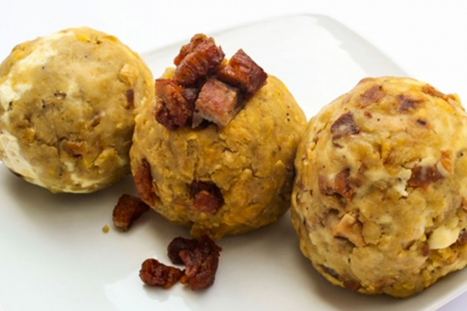

Bolon de verde

Description:
This classic Ecuadorian breakfast dish consists of green plantains which are fried over medium heat until very tender, then mashed into dough, stuffed with cheese or pork, formed into round balls, and then fried again until crispy.
Ingredients:
- 4 green plantains peeled and cut in medium sized chunks
- 4-5 tbs butter or lard
- 2 tbs oil canola or sunflower
- 1 tbs hot pepper or chili powder
- 1 tsp cumin
- 1 cup grated cheese and/or 1 cup cooked chorizo or chicharrones (fried pork belly) or bacon
- Salt to taste
- Ground peanuts optional - add when mashing the green plantains
Steps:
- Melt the butter or lard over medium heat in large sauté pan
- Add the plantain chunks and cook for about 40 minutes or until they are very soft, turn them about every 10 minutes, they should be slightly golden but not too crispy.
- Sprinkle the cooked plantains with the chili powder, cumin and salt.
- Transfer the plantain pieces to a bowl, do this while they are still hot (but be careful not to burn yourself).
- Mash the plantains using a wood masher - or just a regular potato masher - until you obtain chunky dough like consistency.
- Make a hole in the middle of each ball and fill it with the cheese or chorizo or chicharrones (mixed with ground peanuts), gently press the filling into the hole, cover the filling and reshape it back into a ball shape.
- Heat the oil over high heat, add the stuffed plantain dumplings and fry them until they are golden and crispy on each side.
- Transfer to plate lined with paper towels to drain the grease and serve immediately.
Go back?